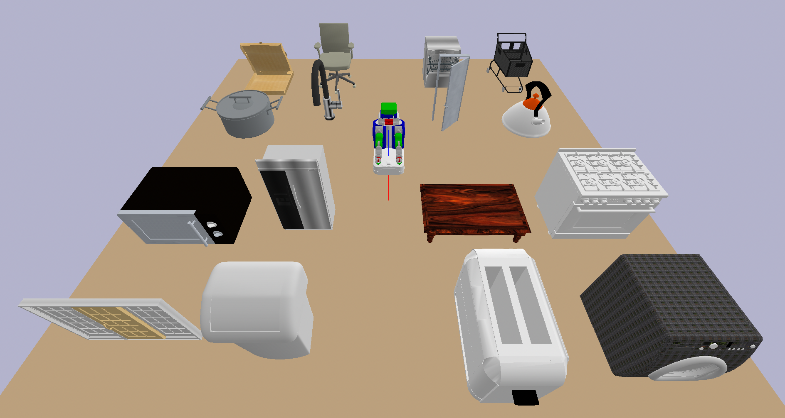
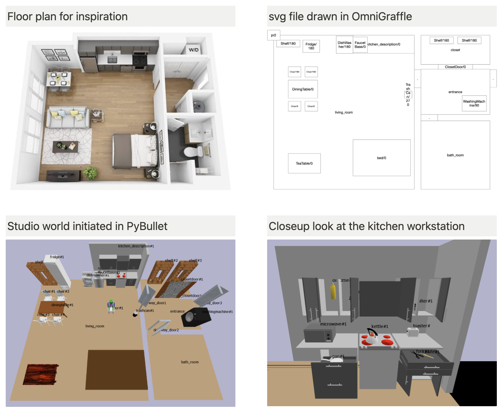

Housework domain#
Motivations#
We are interested in robots performing long-horizon household tasks with daily objects, thus the robot's motion planning must go beyond picking and placing convex objects, to manipulate a variety to joints. So we need to develop controlers and samplers for manipulating objects given urdf files (we'll do point cloud or RGBD image later). With those samplers, we'll be able to better test the limitations of existing TAMP planners without learned abstractions.
Example articulated objects in PartNet-Mobility Dataset: 
Example world in PyBullet#

Steps#
- Implement abstract operators that ignores preconditions on robot and object configuration, test world state transition
- Add samplers for opening (a drawer, a door, a bottle), pouring, and other operators